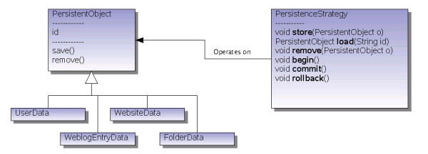
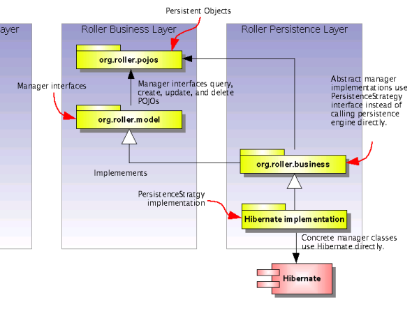

At this level we avoid dependance on specific persistence engines (e.g. Hibernate). We do this by using an interface named {@link org.apache.roller.business.PersistenceStrategy PersistenceStrategy} to store, retrieve and remove {@link org.apache.roller.pojos.PersistentObject PersistentObjects}.
The diagram below illustrates the dependency relationships between the {@link org.apache.roller.pojos org.apache.roller.pojos}, {@link org.apache.roller.model org.apache.roller.model}, and org.apache.roller.business packages.
